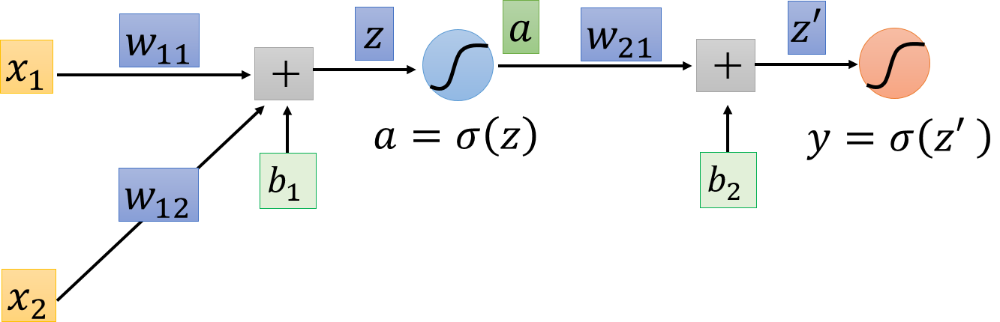
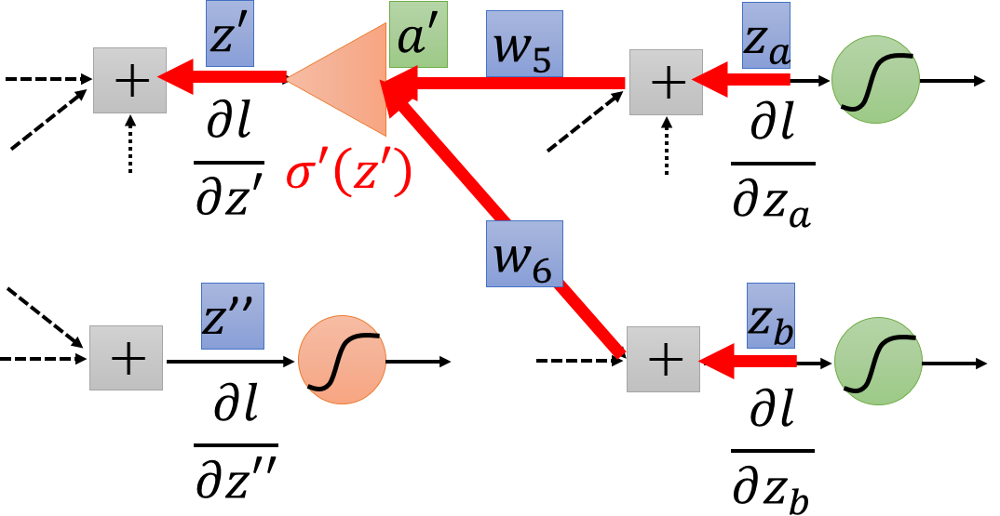
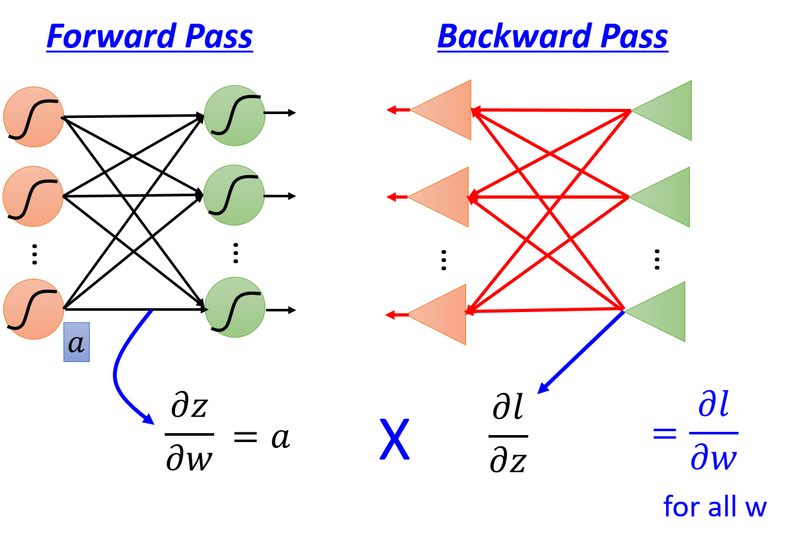

反向传播算法（BP）
人工智能领域的算法真是日新月异啊，最近CMU和Google Brain又提出了XLNet。
这篇博文还是从基础算法入手，介绍一下Back Propagation（简称BP），主要分为两个部分：反向传播的基本原理和RNN的反向传播算法，最后给出代码实现。
Back Propagation $tag$
之前介绍过牛顿迭代法：当我们想要优化一个目标函数时，需要在每次迭代的时候对变量/参数进行更新，而更新参数的最重要的部分就是求目标函数对参数的导数了。
下面对最简单的神经网络进行BP算法的公式推导：
下图是一个只有两个神经元的网络（图片修改自李弘毅老师的PPT），输入样本为一个二维的向量，输出为一个数，现在假设loss函数是，那么要求的便是 以及 （把和合并成一个向量也是可以的）。

图中，表示sigmiod函数。
首先思考一下，这个导数如果让你计算应该怎么做呢？
因为loss函数里与, 参数相关的就只有了，而由 得出， 由线性函数得到…那自然会想到用chain rule来求导了。
整理一下思路：
那么求导如下：
这么求解貌似是可以的，however, 没有任何技巧可言，当网络结构有变化的时候，算法变的异常难写，比如：一层多个神经元的情况，两层之间非全连接的情况，某些神经元共享参数的情况等，想想都可怕，想要写个general的算法几乎不可能，另外还有计算量需要被考虑。
还好聪明人总是有的，考虑到对和对求导过程其实是一样的，下面就仅介绍对的BP求导过程。
对于上面的问题，先只看第一层神经元的参数更新（其实对于任意层任意神经元都有下式的关系）：
接下来分别计算和:正向计算：
从式（3）可以看出正向计算有个非常好的性质，就是神经元的值，这都已经在正向传播时计算过了！
反向计算：
这其中，很简单，sigmiod求导就ok了，而且，nice，又可以用现成的结果了。
而对于的计算比较棘手了，因为：
其中就是神经元间的连接权重参数，对于比较复杂的网络，计算 可以进行递归计算。如果被计算的是神经网络的最后一层（output layer），问题就变的简单了：
结束了，，
再看一下反向计算：因为比较好求，是一个常数，sigmoid函数在该神经元上的求导就得到了；呢则可以使用递归方法，只要求出output layer的就ok。从下图来看，就是input为，然后按照同样的网络反方向计算一次，和正向传播的不同之处仅仅在于sigmoid（非线性转换/激活函数）变成先求导再相乘，结构清晰，计算量也大幅度下降。

最后总结一下：正向传播和反向传播 相乘就可以计算出所有的参数更新梯度。

插句话：
神经网络中常用的优化算法是随机梯度下降法（SGD），实践中常用的是adam优化器（一种自适应步长/学习率的优化算法），理论上梯度下降做自适应步长也很简单，不过需要求Hessian矩阵，而对于上千万甚至上亿个参数的目标函数来说，计算量实在是太大了。
代码实现
这里对基础版的反向传播算法进行代码实现，代码来自这里，你也可以点击这里进行查看。核心代码如下：
1 | def feedforward(self, x): # 正向计算 |
RNN怎么做BP
RNN的结构和前馈神经网络有所不同，反向传播和上述也略有不同，这里要介绍的算法叫做Backpropagation Through Time (BPTT)。这里假设读者对RNN、LSTM、GRU等算法已经有所了解了，就提纲挈领的介绍一下BPTT特别之处。
- 主要的不同点还是要看公式，RNN的在时刻输出神经元的值可以用下式表示：式中与上一时刻的计算结果相关
- 所以的计算算是新内容，其他的和之前说的没有什么不一样
总结
反向传播算法1974年被提出，不过当时没有受到重视，2010年开始，得益于该算法和GPU算力的提升，人工智能开始迅速发展。
Reference
- Werbos, P. (1974). Beyond Regression:” New Tools for Prediction and Analysis in the Behavioral Sciences. Ph. D. dissertation, Harvard University.
- https://medium.com/@a.mirzaei69/implement-a-neural-network-from-scratch-with-python-numpy-backpropagation-e82b70caa9bb
- https://www.youtube.com/watch?v=UTojaCzMoOs